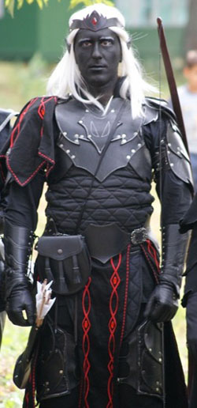

Личная страница ФеникСа
Статус: Владыка Королевства
Любимое оружие:
Samick SKB 50
Lukbis Longbow
Достижения:
<<<тут будут бейджи>>>
История Феникса
С момента прихода на поверхность и основания Вэльдрина, было принято решение о том, что более нет разницы между мужчиной и женщиной, и что теперь стать Властителем Королевства может и мужчина и женщина. Наиболее мудрые дроу стали Верховным Советом, а главенствовать над собой предложили Колю Мудрейшему, великому чародею, и Майарре Сребровласой, отважной воительнице. Чародей отказался от предложения в пользу Майарры, и таким образом она стала первой Владычицей Вэльдрина, свободного королевства дроу эльфов горных рейнджеров.
Жизнь бурной рекой текла в Королевстве, и трудно было горячей воительнице усидеть на троне. Она лично возглавляла некоторые походы на орков и гоблинов, и тем самым вселяла в сердца своих подданных гордость за то, что у них такая Владычица.
Не одно столетие правила она, но в один из черных дней отряд рейнджеров попал в засаду. Десятки орков засыпали героев стрелами, а приведенные горные великаны устроили настоящий ливень из тяжеленных гранитных глыб. В том бою, покрыв себя великой славой за героизм, и пала Майарра, первая Владычица Вэльдрина. Остатки отряда, измученные и израненные, принесли ее тело в Тронный зал, и в тот день в каждом доме, в каждом окне горела траурная свеча.
Но смерть была неотъемлемой частью повседневной жизни Королевства, а посему Верховный совет вновь собрался в Тронном Зале, дабы решить дальнейшую судьбу Вэльдрина.
Долго велись беседы, зачастую перераставшие в жаркие споры – павшая Владычица не оставила потомков, а значит судьба Королевства снова оказалась в руках Богини.
И воззвали жрицы к Эилистраее, и Темная Дева внемлила их зову.
Эилистраее явилась Советникам и велела выбрать троих лучших из числа Детей Совета. Со временем один из них должен был стать новой Владычицей или Владыкой.
Детьми Совета назывались дети членов Верховного Совета и дети Ц’Ринтри, Знатных дроу. Пять лет жрицы наблюдали за детьми, и Избранные были найдены.
Первый ребенок, мальчик, показал прекрасные способности в обращении с клинковым оружием. Никто из его сверстников не мог его победить, и учителя Мили Магтир предсказывали ему будущее великого воина.
Второй ребенок, мальчик, обладал необычайным талантом к стрельбе, и в скором времени достиг мастерства в стрельбе из любого вида луков и арбалетов.
Третий ребенок, девочка, оказалась невероятно мудрой, и с легкостью осваивала сложное ремесло стихийных магий. Таким образом, выбрать оставалось из троих Избранных.
Однако темная сущность всегда была и всегда будет в сердце каждого дроу. И даже среди благородных жителей Вэльдрина иногда появляются те, кто склоняются на сторону Тьмы.
Именно такой была Черная Советница, чье имя навсегда вычеркнуто из летописей Вэльдрина. Она посмела пойти против воли Богини, и вынашивала коварные планы захвата власти. В этом деле она заручилась поддержкой неизвестных существ из других уровней бытия, которые научили ее тайному черному колдовству, которое позволяло затуманивать разум любого существа.
Под покровом ночи по ее приказу Избранные были похищены, и дальнейшая их судьба оказалась неизвестна.
Известно лишь, что произошло со вторым ребенком – он выжил.
Слуги Черной Советницы бросили связанного мальчика неподалеку от логова гоблинов, за много лиг от границ королевства, в надежде на то, что твари, найдя ненавистного дроу, тут же разорвут его на куски. Однако гоблины поступили несколько иначе.
В тот день лучшие охотники племени принесли вожаку просто невероятный подарок – живого ребенка дроу! Которого, как они уверяли, им лично удалось украсть из деревни мерзких эльфов.
Вожак, да и все племя были несказанно рады возможности помучить своего самого лютого и ненавистного врага, а посему посадили напуганного ребенка на тяжелую цепь в самом холодном углу пещеры. Целыми днями маленькие гоблины развлекались тем, что бросались в мальчика камнями и палками, издевались над ним, наряжали его в вонючие шкуры и заставляли возить их по пещере, словно рофа. Иногда ребенку удавалось отбиться от гоблинят, но тогда на зов детей приходили взрослые злые гоблины, и издевательства и побои продолжались.
Всего в рабстве у гоблинов юный дроу провел более двадцати лет. Все эти годы он питался лишь теми ничтожными крохами, которые гоблины могли ему бросить, дабы «игрушка» не сдохла. Изредка он находил какие-то грибы, или ему удавалось поймать крысу… Это были самые тяжелые годы в его жизни, которая только начиналась. Его тело было измучено, ослаблено и сплошь покрыто шрамами, но дух его стал крепче камня, ибо злоба и ненависть к гоблинам заставляла его жить и сопротивляться. Повзрослев и окрепнув, он уже мог дать достойный отпор любому мелкому гоблину, а потому «игры» с детьми происходили все реже, а вот побои от взрослых все чаще.
Каждую ночь, зализывая раны и отплевывая кровь, он уползал в свой угол, на старые шкуры и солому. И каждую ночь во сне он видел дивной красоты белокаменный город.
Он не помнил что это за город, как он называется, даже имени своего не помнил, но он точно знал, что это его дом…
В один из вечеров гоблины притащили в пещеру несколько бочек крепкого вина. По их разговорам дроу понял, что только что был ограблен караван с торговцами, и вино это лишь малая часть их улова. Весь вечер и всю ночь гоблины пировали, и никто даже не вспомнил про пленника. Когда же, ближе к утру, все крепко спали, в ореоле серебряного сияния ему явилась сама Эилистраее, Темная Дева. Юноша просто не мог поверить своим глазам! Прекрасная Леди Танца, о которой ему когда-то, в самом раннем детстве рассказывали учителя, явилась ему. Дроу упал на колени, и слезы радости лились по его эбеновой коже.
Богиня поведала ему кто он, что город, из которого он родом, нуждается в нем, и что тяжелых испытаний он пережил уже достаточно. Она велела ему искать свой дом, ибо только тогда он сможет обрести себя.
Когда богиня исчезла, цепь, которой дроу был прикован, рассыпалась как песок, и стараясь не издать ни звука, дабы не разбудить пьяных гоблинов, ему удалось выползти из пещеры.
Весь день и всю ночь бежал юноша прочь от ненавистных скал. Он не знал куда бежать, но ноги вели его все дальше и дальше от скал, и постепенно он оказался у границы неизвестного леса. Скрывшись среди молодых зарослей, дроу упал в изнеможении, и проспал так несколько дней. Ни холод ночи, ни роса утра не могли ему помешать – после жуткого рабства, холодных и твердых камней и вонючих шкур весенний ветерок ласково гладил его по коже, покрытой множеством шрамов, а пушистый мох был для него поистине королевским ложем.
Очнувшись, юноша вволю наелся ягод, и побрел вглубь леса, не думая ни о чем. Он не думал, что кто-то может жить в этом лесу, но вскоре услыхал вдалеке крики.
Не понимая почему, но юноша бросился на крики, твердо убежденный, что кто-то там нуждается в помощи. И кто бы это ни был, ему нужно помочь, поскольку, перенеся муки рабства, дроу не могу допустить чьих-либо мучений.
Прибежав на крики, юноша увидел горящее селение лесных эльфов. В памяти мелькнули обрывки воспоминаний, в которых ему, еще совсем маленькому, рассказывали о том, что есть такие же эльфы, как и он, но с белой кожей и волосами разных цветов. Возле одного из горящих домов билась в истерике совсем еще юная девушка с волосами цвета ночи, которую две женщины не пускали внутрь. Юноша не понимал их языка, но что-то в душе толкнуло его, и он что есть мочи бросился внутрь, не обращая внимания ни на крики эльфов, заметивших его, ни на смертельный жар, исходящий из раскрытых дверей.
От слепящего огня и дыма он ничего не видел, но сердце вело его. Внутри одной из комнат он нашел лежащего на кровати воина-эльфа. Он был без сознания, а все тело его было покрыто окровавленными бинтами, словно он совсем недавно пережил жестокую битву. Завернув его в одеяло, юноша взял раненого на руки и бросился к выходу. Пламя хлестало его по голым рукам и ногам, волосы начали тлеть, но в целом пламя отступало с его пути, словно какая-то неведомая сила прокладывала ему дорогу прочь из этого огненного ада.
Выскочив на улицу, дроу, захлебываясь от кашля, передал раненого, и упал, потеряв сознание.
Очнулся он в непривычно мягкой и удобной постели. Несколько ожогов и ран были заботливо обработаны, обгоревшие волосы аккуратно сострижены. Возле кровати стоял высокий эльф, который обратился к дроу на его родном языке. Он объяснил, что понимает дровский благодаря магии некоего амулета. Также эльф поведал, что юноша спас самого храброго из воинов их селения, который был тяжело ранен в предыдущей стычке с дикарями. Дикарями он назвал людей, которые изредка нападали на селение эльфов ради наживы, и которые в этот раз сожгли несколько домов, пока большая часть воинов-эльфов была на охоте.
Юноше предложили остаться в деревне, пока он не восстановит силы, а после он сможет уйти тогда, когда пожелает.
Многие видели тогда, как пламя пощадило его, а потому ему было дано имя Феникс, подобно мистической огненной птице, что рождается в пламени и в пламени погибает.
Феникс очень быстро выучил язык эльфов, и вскоре уже мог свободно вести разговоры с любым из них. Он с жадностью впитывал любые знания, которых эльфы ему предоставили в избытке, и быстро набирался мудрости.
Деревня та называлось Племя Мастеров, и каждый из ее жителей был искусным мастером какого-то дела. Были тут и великие оружейники, и умелые воины, и мудрые чародеи и великие музыканты. Фениксу предложили попробовать себя в каком-нибудь деле, и юный дроу с удовольствием приступил к обучению. Но небыло пределу удивлению Мастеров, ибо любое дело, за которое он брался, выходило у него необычайно хорошо, и многие эльфы не могли достичь за столетия того, чего он достигал за месяцы и годы. Он ковал великолепные мечи необычной формы, делал прекрасные резные посохи, а доспехам из зачарованной кожи, которые он сотворял, могли бы позавидовать лучшие воины. Но более всего его тянуло к стрелковому оружию. Ему удавалось сделать луки, которые могли натянуть даже дети, но которые по мощности могли тягаться даже с луками сильных воинов!
В один из дней, старейшины Племени Мастеров дали юноше новое имя – Курунир, которое означало «мастер, умелец на все руки». Ему было сказано, что он всего за несколько десятилетий превзошел некоторых опытных мастеров, и что он тот, кто сможет создать величайший лук из всех, которые когда-либо создавались. Старейшины показали ему ветхие рукописи, в которых Мастера древности описывали способ создания такого лука. Но, создавая этот лук, мастер должен был быть готов к тому, что придется рискнуть собственной жизнью, поскольку слишком уж трудно было достать все компоненты. Никто до него не выживал, но он должен был.
Заручившись поддержкой нескольких самых отважных охотников, Феникс отправился в глубь леса, туда, где в черной реке обитает речной дракон… Изготовив экзотическую ловушку, и став живой приманкой, дроу вступил в смертельную игру. Но Богиня была на его стороне, и змееподобный речной дракон, после длительной борьбы, был изловлен и убит. Израненные но переполненные счастьем охотники вернулись в деревню, волоча необходимые части туши дракона. Использовав спинные сухожилия речного дракона, редчайшие сорта древесины, вымоченной в его же крови, и древние заклинания старейшин Мастеров, Фениксу наконец удалось создать именно то оружие, которое по преданиям Древних поможет своему создателю и владельцу свершить свою судьбу. Когда лук был готов, сестра того воина, которого дроу вынес из горящего дома много лет назад, сделала ему просто невероятный подарок – она сплела ему тетиву, сделав ее из собственных волос. Эльфы Племени Мастеров были шокированы, ведь ни у кого в деревне небыло таких шикарных черных волос, но все же они согласились, что это достойная благодарность за спасение ее брата. Феникс принял драгоценный дар с огромной благодарностью, и, одев необычную тетиву на лук, дал имя своему оружию. Он назвал его Морку, Черный лук, и в последствии многие эльфы называли так и лук и его владельца.
Так, охотясь и сотворяя дивные вещи, Феникс Курунир Морку прожил в Племени Мастеров более сотни лет. Но сердце вновь позвало его. Он должен был вернуться, ибо Богиня велела ему так. Попрощавшись со своими новыми друзьями, которые стали ему, пусть и на время, той семьей, которой у него никогда небыло, дроу покинул деревню.
Теперь он был силен, прекрасно обучен и экипирован, а в руке сжимал свой волшебный лук. Теперь он был готов вернуться домой, и победить любого врага, который бы посмел встать у него на пути.
Преодолев огромное расстояние, Феникс наконец подобрался к границам Вэльдрина. В первой же деревушке, в которой жили преимущественно дроу, его приняли очень радушно, поскольку не часто к ним забредали воины дроу, и рассказали, что несколько недель назад сюда заходил патрульный отряд рейнджеров, чтобы пополнить запасы и двинуться дальше вдоль границы. Феникс решил дождаться возвращения отряда, и двинуться назад в королевство уже вместе с ними.
Через неделю патрульный отряд рейнджеров вернулся в деревню. Предводителем отряда был Барас, один из лучших чародеев Королевства, и один из тех, кто испытывал Детей Совета. Небыло предела счастью чародея, когда в незнакомом воине он узнал одного из Избранных, и небыло предала горю Феникса, когда узнал он, что твориться в Королевстве.
Все эти годы Черная Советница находилась на троне, который она получила, околдовав одних Советников, и запугав других, тех, кто мог противиться ее черной магии. Она устроила жестокую диктатуру, и любой несогласный с ее решениями тут же загадочным образом исчезал, либо же отправлялся на дальние границы Королевства, где бы он никому не мешал.
Рейнджеры присягнули Фениксу в верности, ибо сама Эилистраее выбрала его.
Небольшой отряд двинулся в сторону Вэлькина, Скрытого, столицы Королевства. По пути были встречены еще три небольших отряда, и, дождавшись утра, когда солнце едва показало свои первые лучи, отважные рейнджеры вошли в город. Стража почти не оказывала сопротивления, поскольку стоило лишь Фениксу взглянуть им в глаза, как чары тут же рассеивались, и разум их вновь просветлялся. Но, добравшись до Тронного зала, герои обнаружили, что черная магия стала сильнее, и стража стала нападать на них.
То был день печали и горя, поскольку много отважных воинов пало в том бою. Битва завершилась в тот момент, когда раненая стрелой Черная Советница сдалась. Она разрушила свои чары, и упала на колени, моля о пощаде. Но нет пощады тем, кто предал Богиню, ибо предав своих собратьев, любой отступник теряет Ее благосклонность.
Впервые за всю историю Вэльдрина была проведена публичная казнь.
Освободив престол и победив врагов, Феникса прозвали Ультриннан, Побеждающий. В Тронном зале устроили пышное торжество в честь возвращения законного Владыки, а в ближайшее полнолуние его короновали.
Еще много испытаний выпало на долю нового Владыки, ибо Вэльдрин, с момента его основания никогда не знал, и не будет знать покоя, поскольку для горных рейнджеров всегда найдется работа в неспокойных северных горах. Но с тех пор, и пока не найдет он покоя в бою, править свободным королевством дроу эльфов горных рейнджеров будет Уст Валук Феникс Ультриннан Курунир Морку, и да не оставит его в бою великая Эилистраее.
Вэльдрин ультрин!